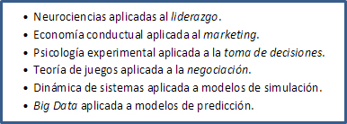
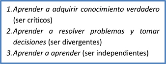
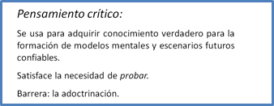
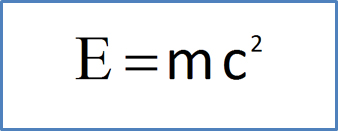
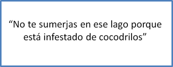
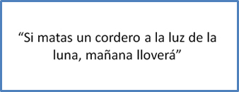
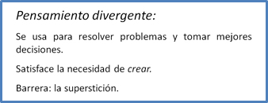
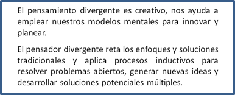
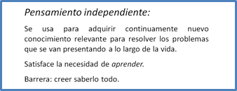

Artículos de interés
Modelos para enseñar
Existe una desconexión entre lo que sabe la ciencia y lo que se hace en los negocios
La tendencia actual de los sistemas educativos del mundo apunta hacia el desarrollo de las competencias necesarias para un desempeño exitoso en el trabajo. El Instituto SAGE-WISE es un crisol para el desarrollo de las capacidades que necesita el estudiante autónomo para actualizarse en su oficio o profesión.
La comunidad empresarial no ha tenido tiempo para asimilar el vertiginoso avance de la administración científica en su beneficio ni el abanico de posibilidades que ofrecen hoy en día las tecnologías de la información y telecomunicaciones. El poder de cómputo, el manejo de grandes bases de datos y los dispositivos móviles, posibilitan el aprendizaje a distancia y el acceso a cantidades casi ilimitadas de información.
SAGE-WISE usa en sus modelos, los principios de la administración científica que se han establecido a partir de las investigaciones de un número de destacados estudiosos de la materia. En la actualidad, no sólo el poder de cómputo es mayor, sino que ha habido avances científicos importantes en diferentes áreas de conocimiento que se aplican a los negocios.
Muchos gurús de la administración le dan seguimiento a las ideas de científicos e investigadores y tienen la habilidad para aplicarlos en la gestión de negocios. Hoy en día hay un mayor entendimiento del comportamiento humano en las organizaciones y de los factores cognitivos que influyen en la toma de decisiones y la solución de problemas. Por ejemplo, recientemente ha habido avances significativos en áreas como:

SAGE-WISE incorpora los principios de la administración científica en sus modelos, cursos y seminarios y aprovecha las tecnologías de información para la enseñanza. La amplia gama de seminarios que ofrece SAGE-WISE, habitúan al estudiante a pensar mejor e incrementan su capacidad para pensar críticamente y de manera divergente e independiente, competencias fundamentales para la superación personal en la vida privada y profesional.
En la dimensión cognoscitiva, individuos y organizaciones necesitan aprender tres cosas a lo largo de la vida para ser competitivos en la profesión o en los negocios:

Cuando nos encontramos ante una situación novedosa podemos concentrarnos en los aspectos presentes de la situación, si estamos habituados a pensar críticamente, o bien en los ausentes, si pensamos divergentemente. SAGE-WISE se aboca a desarrollar estos hábitos.
El pensamiento crítico es el hábito de cuestionar, analizar, discernir y argumentar. Satisface la necesidad del ser humano de probar y se usa para adquirir conocimiento verdadero para la formación de modelos mentales fundamentados en un aprendizaje sólido y veraz para tomar mejores decisiones.

Para inferir concusiones, el pensamiento crítico se apoya en un proceso de investigación para explorar situaciones u objetos por medio de la recolección de evidencia, y separar los tópicos complejos en partes para analizarlos y entenderlos mejor. Las principales barreras para el pensamiento crítico son la adoctrinación y la dependencia excesiva de una autoridad.
Hay algunas aseveraciones para las que no vale la pena desperdiciar nuestro pensamiento crítico:
Lo creemos porque viene de una autoridad reconocida en la materia: Albert Einstein.

Lo creemos porque es un buen consejo que no amerita investigarse por su alta razón beneficio: costo.

Intuimos que no tiene sentido investigar algo tan absurdo.

El pensamiento divergente es el hábito de razonar para inferir conclusiones válidas. Satisface la necesidad del ser humano de crear y se usa para formular teorías de negocio que conduzcan a directrices efectivas para resolver problemas y tomar mejores decisiones. La principal barrera para el pensamiento divergente es la superstición.

El pensamiento divergente nos ayuda a comprender cómo se interrelacionan los objetos o eventos y sintetizar nueva información a partir de experiencias y conocimientos previos. Requiere de la capacidad para combinar o sintetizar en formas novedosas ideas, imágenes o conceptos existentes y se caracteriza por su alto grado de innovación y proclividad al riesgo.

El pensamiento independiente es el hábito de ser receptivo de nuevo conocimiento. Satisface la necesidad del ser humano de aprender y se usa para adquirir continuamente conocimiento relevante para resolver los problemas que se van presentando a lo largo de la vida. La principal barrera para el pensamiento independiente es creer saberlo todo.

Para el ejercicio del aprendizaje independiente se necesitan dos cosas: una buena disposición para aprender y un modelo educativo adecuado. El modelo educativo de SAGE-WISE está diseñado para personas autónomas que buscan la superación continua y está enfocado al desarrollo de competencias del pensamiento para enfrentar la dinámica de cambio acelerado que se vive en la actualidad.